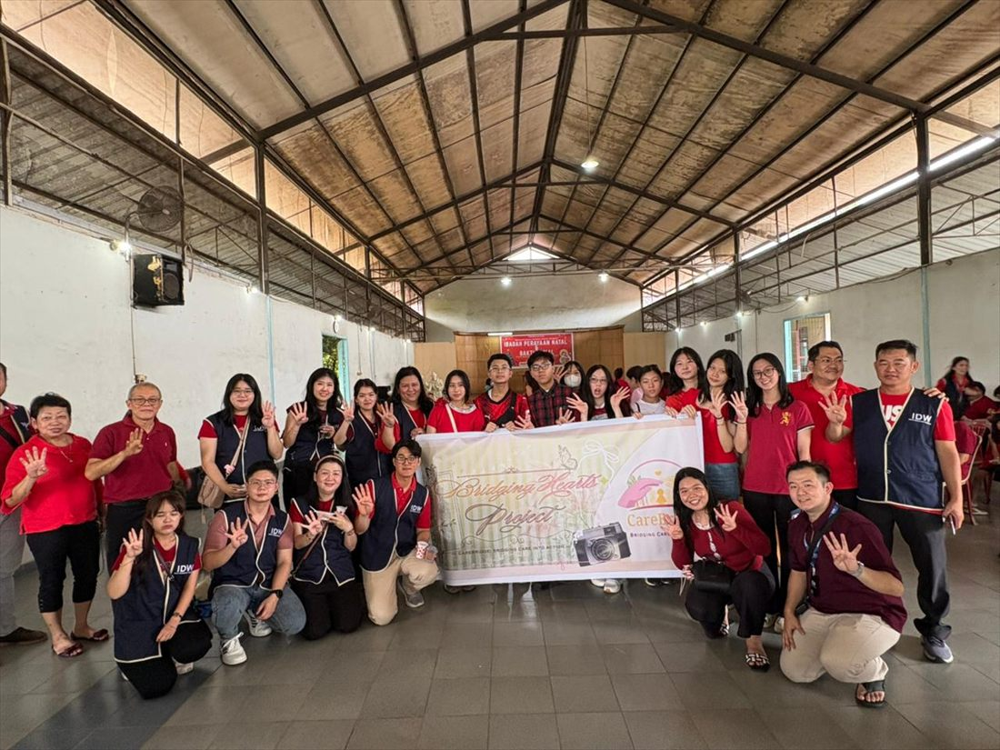
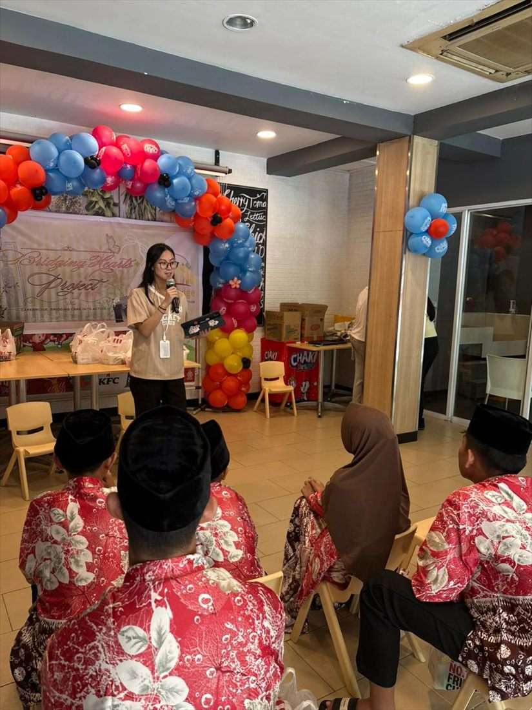
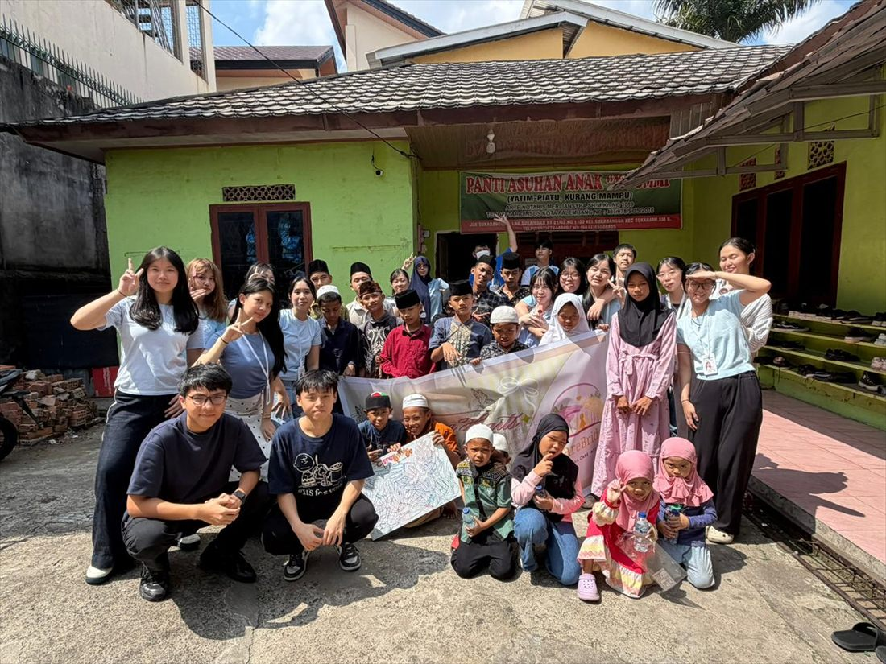

Introduction
The Bridging Hearts Project is an initiative organized by CareBridge that aims to provide quality education as well as aiding in food access challenges faced by vulnerable communities. From our first program on 8 February 2026 to our latest on 2 August 2026, every program has brought us one step closer to creating a stronger and more connected community. Every single Bridging Hearts Project has been organized with love from our team, dedicated to supporting and bringing positive change to our community.
The Reason Behind Bridging Hearts Project
Every community has its own obstacles. From strict access to education to food shortages, we wanted to understand these challenges beyond what we see on the surface and find a way to contribute meaningfully. As a community powered by the passion and enthusiasm of youth, we believe that age should never be a limit to making a difference. But the elephant in the room is still there: what can we do to make a difference?
Motivated by our belief that young people can create change, we created Bridging Hearts as a platform to give back to our community. We understand the struggles vulnerable communities have to face every day. Instead of waiting for change to happen, we decided to be the ones to start it!
Why the Name “Bridging Hearts”
We choose the name “Bridging Hearts” because we believe that meaningful change begins when people connect with one another. Our goal was not simply to provide help, but to build connections between people and create a stronger sense of community. BHP #1 first demonstrated these principles into action by connecting with the elderly and creating moments of joy, companionship and connection.
Following BHP #1, our second Bridging Hearts Project (BHP #2) continued our mission by creating a safe and welcoming environment where children in need could feel supported, valued and heard. Through fun activities and meaningful interactions, we aimed to bring them moments of joy while reminding them that they are valued and cared for.
This brings us to our recent event, BHP #3. As part of this Bridging Heart Project, we visited Panti Asuhan Ya Ummi and organized fun activities designed to enhance the creativity of the children. Believing the principles of the Bridging Hearts Project, we are happy to create meaningful connections with them!



The Results of Bridging Hearts Project
From the first day of the Bridging Hearts Project, we have believed that we have done what it takes to make a change. Through every activity, interaction, and moment we shared, we hoped to bring joy and create meaningful memories for the children. Although our actions may seem small, we believe that even the smallest efforts can make a lasting impact on someone’s life. Most importantly, we aren’t just donating materials and supplies to those in need, we are building connections with them by sharing stories, interacting with them, and creating meaningful memories together.